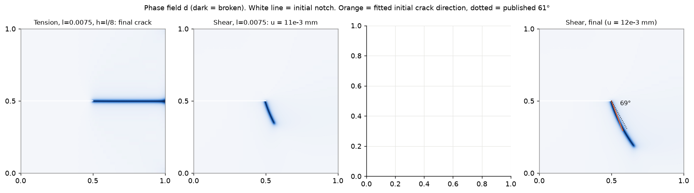
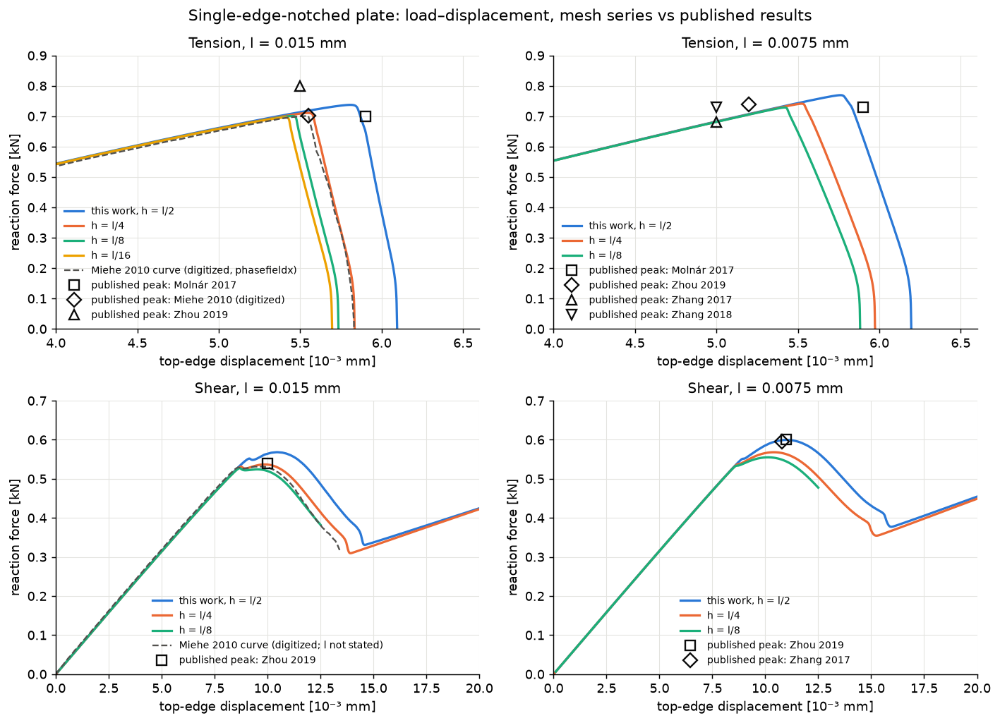
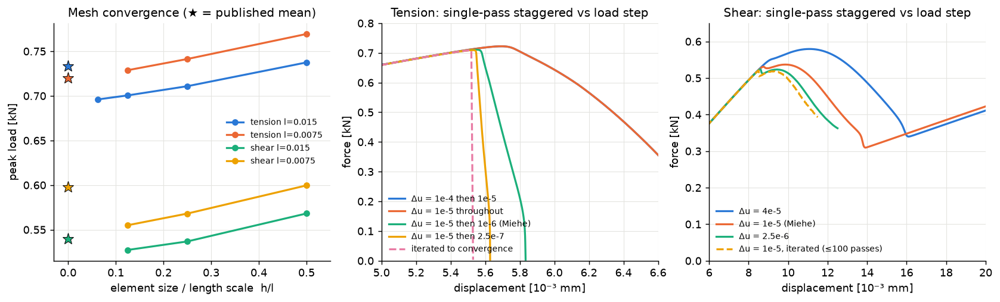
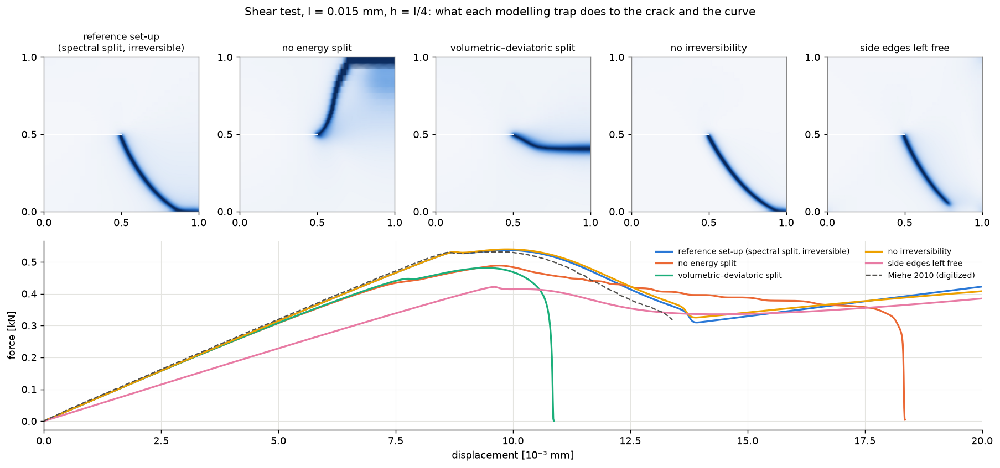
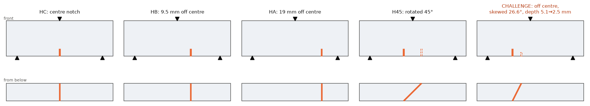
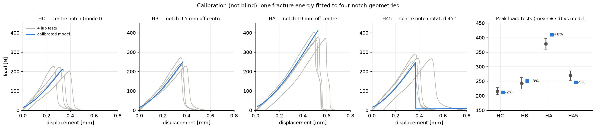
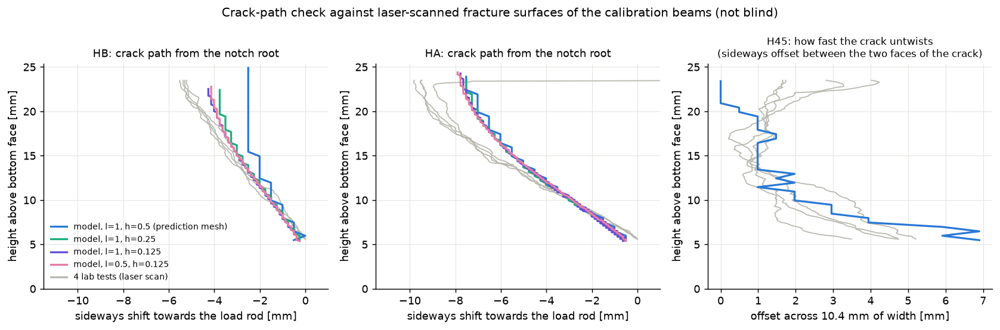
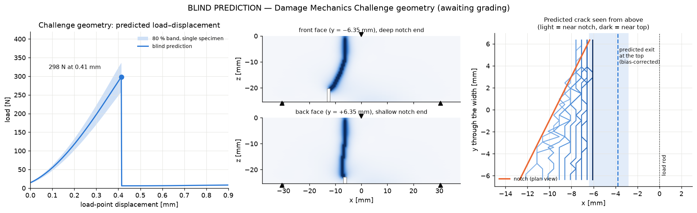

Trial 8 — Fracture: phase-field benchmarks, then a blind prediction
Can the agent write a fracture solver that reproduces the standard published benchmarks, and then predict a real experiment it has not seen?
Objective
Rung 1. Write a phase-field fracture solver from scratch and reproduce the two standard benchmarks (a notched square plate pulled apart, and the same plate sheared), graded against curves published by other groups, with the pass tolerance fixed before the first run.
Rung 2. Take a real blind challenge: calibrate a model on the organisers' calibration tests only, predict how an unseen specimen breaks, freeze the prediction, and let someone else grade it against the experiment.
The brief named the Third Sandia Fracture Challenge (3D-printed steel). Its data package sits behind a Globus login and the only open copy of the problem statement was firewall-blocked, so the fallback named in the brief was used instead: the Damage Mechanics Challenge (3D-printed gypsum beams, organised by Purdue, LLNL and Sandia). Same protocol: calibration data in, blind prediction out.
Rung 1 — the benchmark and how it is held
| Specimen | 1 mm × 1 mm plate with a horizontal notch from the left edge to the centre (Miehe, Hofacker & Welschinger 2010) |
| Material | λ = 121.15, μ = 80.77 kN/mm², fracture energy Gc = 2.7·10⁻³ kN/mm, length scale l = 0.015 and 0.0075 mm |
| Tension test | bottom edge clamped, top edge pulled upward |
| Shear test | bottom edge clamped, top edge pushed sideways with no vertical motion; the side edges are also held vertically (see trap 1 below) |
| Solver | hand-written: bilinear quads, JAX automatic differentiation on the GPU for residual and tangent, sparse direct solves; staggered displacement / phase-field scheme with a history field for irreversibility and the spectral tension–compression split |
| Graded configuration | single-pass staggered scheme with Miehe's load steps on the finest mesh of each series — fixed in PREREGISTRATION.md before the first run |
Crack paths

Phase field (dark = broken). Tension: the crack runs straight across. Shear: one crack leaves the notch tip downward and curves to the bottom edge — the pattern every published result shows.
Load–displacement against published results

Lines: this work on successively finer meshes (h = element size, l = length scale). Open symbols: peak points read from published figures. Dashed: Miehe's curve as digitized by a third party. The published values themselves scatter by 10–15 %.
Rung 1 — pass / fail
| # | Quantity | This work | Reference | Tolerance | Note | |
|---|---|---|---|---|---|---|
| T1 | Tension l=0.015 peak load | 0.696 kN | 0.734 kN | ±10 % | PASS | -5.2 % (t_l015_h16) |
| T2 | Tension l=0.015 displacement at peak | 0.00541 mm | 0.00565 mm | ±10 % | PASS | -4.3 % (t_l015_h16) |
| T3 | Tension l=0.0075 peak load | 0.729 kN | 0.720 kN | ±10 % | PASS | +1.2 % (t_l0075_h8) |
| T4 | Tension l=0.0075 displacement at peak | 0.00542 mm | 0.00528 mm | ±10 % | PASS | +2.6 % (t_l0075_h8) |
| S1 | Shear l=0.0075 peak load | 0.555 kN | 0.598 kN | ±10 % | PASS | -7.2 % (s_l0075_h8) |
| S2 | Shear l=0.0075 displacement at peak | 0.01012 mm | 0.01090 mm | ±10 % | PASS | -7.2 % (s_l0075_h8) |
| T5 | Tension crack path: max deviation from y=0.5 | 9.40e-04 mm | straight, y = 0.5 | ≤ l = 0.0075 mm, reaches right edge | PASS | t_l0075_h8 |
| S3 | Shear initial crack angle (fit 0.02–0.10 mm from tip) | 68.6° | 61.0° | ±10° | PASS | s_l0075_h4; other fit windows: 67.0°, 68.3° |
| S4 | Shear crack meets bottom edge at x | 0.839 mm | 0.850 mm | ±0.07 mm, single crack | PASS | s_l0075_h4 |
| C1 | Mesh convergence t_l015: change of peak load between t_l015_h8 and t_l015_h16 | 0.65 % | — | ≤ 3 % | PASS | |
| C1 | Mesh convergence t_l0075: change of peak load between t_l0075_h4 and t_l0075_h8 | 1.72 % | — | ≤ 3 % | PASS | |
| C1 | Mesh convergence s_l0075: change of peak load between s_l0075_h4 and s_l0075_h8 | 2.35 % | — | ≤ 3 % | PASS |
References are means of values read this session from: Molnár & Gravouil 2017 (HAL hal-02132509), Zhou, Rabczuk & Zhuang (arXiv 1902.05922), Zhang et al. (arXiv 1706.05449, 1805.07357) and Miehe's curve as digitized in the phasefieldx repository. Miehe's own papers are paywalled and were not opened; nothing is graded against memory. The crack-path rows use the finest shear run carried to the end of the loading; the finest mesh (stopped earlier) gives 69°.
How the answer moves with mesh and load step

Left: peak load against mesh size — it keeps falling as the mesh is refined; the stars are the published means; the shear ones were computed on coarse meshes (h ≈ l/2). Middle: tension with one staggered pass per step — the standard step (green) is within 0.3 % of the fully iterated answer (dashed). Right: shear is not converged at the standard step: a four-times smaller step, or iterating each step, lowers the peak by 2–3 % and moves it to the first hump.
The known traps, shown rather than avoided

Top: final crack for five set-ups of the same shear test. Bottom: their load–displacement curves with Miehe's digitized curve (dashed), which the reference set-up overlays.
- Boundary conditions nobody prints. With the side edges free (what most papers describe) the plate is 27 % too soft and the peak 22 % too low. Holding the side edges vertically reproduces the published stiffness to three digits. This was the first run, and it was wrong.
- No tension/compression split. The crack grows upward into the compressed half and damage smears along the top edge.
- The other common split (volumetric–deviatoric) sends the crack sideways and the plate fails completely — a different answer from a defensible model choice.
- Mesh size against length scale. Peak load drops 5–8 % from h = l/2 to h = l/8.
- Staggered-scheme stagnation. Iterating the shear problem to convergence with coarse steps took 348 passes at the onset of cracking and then failed to finish a single step in 3000 passes (run abandoned).
- Irreversibility. Switching it off changes almost nothing here (+0.4 %): the loading is monotonic, so this benchmark does not test it.
Rung 2 — the blind challenge
| Challenge | Damage Mechanics Challenge: 3D-printed gypsum beams (76.2 × 25.4 × 12.7 mm) broken in three-point bending |
| Given | load–displacement curves and fracture surfaces of 16 calibration beams with four other notch shapes (HC, HB, HA, H45), compression and split-cylinder tests, ultrasonic velocities |
| Asked | for a beam with an off-centre, skewed, tapered notch: the load–displacement curve, and where the crack goes |
| Model | the same phase-field method in 3D (GPU, 95,020 elements): l = 1.0 mm, Gc = 0.0514 N/mm fitted to the four calibration geometries; plus an empirical contact-compliance law for the loading rods |
| Blindness | only the organisers' information packet and calibration files were read; the outcome paper and all participant papers were not opened. What the agent remembered beforehand is written in log.md (no outcome numbers). |

The four calibration geometries and the challenge geometry (notch shown in orange; front face, and seen from below).
Calibration (not blind)

Grey: the lab tests. Blue: the model with one fracture energy for all four geometries. Peak loads agree within −9 % to +8 %; the misfit pattern (too strong for the far-offset notch, too weak for the rotated notch) is carried into the uncertainty.
| Geometry | Measured mean | Model | Error |
|---|---|---|---|
| HC | 216 N | 212 N | -2.0 % |
| HB | 243 N | 250 N | +3.1 % |
| HA | 379 N | 411 N | +8.4 % |
| H45 | 270 N | 246 N | -8.7 % |

Left and middle: crack path of the two off-centre calibration beams, model against laser scans. The lower half agrees within about 0.5 mm. Higher up the measured cracks keep drifting towards the loading rod while the model on the prediction mesh (blue) goes straight up along the mesh lines. Finer meshes (other colours) close most of the gap for HB but not for HA. Right: for the rotated notch, the sideways offset between the two sides of the crack dies out over the first ~10 mm in both test and model.
The prediction
Graded 2026-11-15. The prediction was frozen and committed (8a5afd7) before the outcome was read. A separate reader then pulled the outcome from the organisers' results paper (Morris et al., Eng. Fract. Mech. 310 (2024) 110421). That paper tabulates no numbers, so the experimental values are read off its figures by eye (about ±10 N, ±1 mm).

| Peak load | Predicted 298 N; measured curves peak near 305, 330 and 345 N (mean ≈ 327 N). About 9 % low, and below all four expert teams (≈ 320–335 N). The measured mean sits just inside the prediction's own 80 % interval. weakest item |
| Displacement at peak | Predicted 0.41 mm; measured ≈ 0.37–0.44 mm. inside range |
| Failure mode | Abrupt drop with a low tail, predicted and observed. correct |
| Crack path | Start at the notch predicted at −11.6 mm (front) and −7.1 mm (back); observed ≈ −12 and −6 mm. Top exit predicted at −3.8 mm on both faces; observed ≈ −4 mm (front) and ≈ −2 mm (back). within ~2 mm |
| Not graded | The organisers' area-based error scores (they need the digital experimental envelope, which sits behind a login). Surface displacement fields and roughness were not predicted. |

Left: predicted load–displacement record with the 80 % band for a single specimen. Middle: predicted crack on the front and back faces. Right: the crack surface seen from above — it starts along the skewed notch and twists into a plane across the beam.
| Peak load | 298 N (1σ ±24 N; 80 % interval 266–329 N for the mean of the test series, 259–337 N for one specimen) |
| Displacement at peak | 0.41 mm (1σ ±0.09 mm) — mostly rod-contact compliance, only 0.16 mm is beam deflection |
| Loading stiffness | 800 N/mm between 30 % and 80 % of peak |
| After the peak | abrupt (unstable): the structural solution falls to 11 % of peak within one increment of 0.0026 mm; in the measured record this is a vertical drop to about 2 % of peak followed by a low tail |
| Crack path | at the notch root; first on the deep (front, y=-6.35) side of the tapered notch; single crack; twists from the 26.6-degree skewed notch plane towards a plane normal to the beam axis and drifts towards the loading rod (x=0). Near the top surface the crack sits at x ≈ -3.8 mm (front), -3.8 mm (mid), -3.8 mm (back), measured from the loading rod. |
| Not predicted | surface displacement fields (challenge question 3) and fracture-surface roughness |
Sensitivity of the predicted peak load
| Model variant (each re-calibrated) | Predicted peak |
|---|---|
| base l=1.0 h=0.5 | 295 N |
| finer mesh l=1.0 h=0.35 | 303 N |
| smaller l=0.6 h=0.3 | 295 N |
Uncertainty budget (relative, 1σ): model form 7.4 % (scatter of the four calibration geometries about the fit), numerical / length-scale choice 2.0 %, specimen-to-specimen 6.1 %.
Honest caveats
- The challenge is not the one in the brief. SFC3 (ductile failure of printed steel) could not be attempted: its data package needs a Globus login and the open copy of the problem statement was firewall-blocked. The fallback is a brittle bending problem — a much better match to the rung-1 solver, and therefore an easier exam than SFC3 would have been.
- Rung-1 references are soft. Miehe's own papers are paywalled; the reference numbers were read by eye from figures in four other papers (±3 %) plus a third-party digitization of Miehe's curve. Those papers scatter by 10–15 % and disagree on whether the peak rises or falls with the length scale.
- Passing depends on the wide tolerance. The published shear values were computed on coarse meshes (Zhou: h ≈ l/2) with a lagging single-pass scheme. My converged shear answer is 7 % below them on the finest mesh, and a smaller load step would lower it a further ~3 % and move the peak displacement by ~13 % (two humps of nearly equal height) — which would fail the displacement check if the step-converged curve had been the graded one. The graded configuration was fixed in advance to be the literature's own scheme.
- One boundary condition was inferred, not read. The side-edge constraint in the shear test comes from matching elastic stiffness, decided after my first run was visibly wrong but before any peak load with the new constraint was seen.
- One metric definition changed after first sight. The 'crack meets the bottom edge' position was first computed on the stretch where the crack runs along the clamped edge (0.92); it was redefined as the point where the centreline first comes within 0.02 mm of the edge (0.84). Both are in the metrics file.
- The initial crack angle passes with a shrinking margin: 66.6° → 68.6° → 69.2° with mesh refinement, against a published 61° ± 10°.
- Blind prediction, model form. One fracture parameter fits four calibration geometries only to ±9 %, with opposite signs for offset and rotated notches; the challenge notch is both. No calibration geometry was held out.
- Blind prediction, crack path. The predicted path above mid-height is biased towards vertical (structured mesh for one calibration beam, model form for the other); the quoted top exit includes an empirical 2.3 mm correction from the calibration beams rather than a converged computation. In the finer-mesh 3D run the unstable step hit the 400-pass cap.
- Blind prediction, displacement. Two thirds of the predicted displacement is an empirical contact law fitted to the calibration beams; the elastic modulus is an assumption (specimen dimensions of the compression tests are not in the packet).
- Prior knowledge. The agent remembered that a phase-field participant paper for this challenge exists and reports good agreement (no numbers). That cannot be un-known; it is recorded in the log.
Terms used on this page
| phase-field fracture | A way to simulate cracks without tracking them explicitly: a smooth field d runs from 0 (intact) to 1 (broken) and the crack is the narrow band where d ≈ 1. |
| length scale l | The width of that band. In this model it also sets the material's strength, so it is a material parameter, not just a numerical one. |
| fracture energy Gc | Energy needed to create a unit area of crack. |
| mesh size h | Element edge length. The band must be resolved (h well below l) or the crack looks tougher than it is. |
| staggered scheme | Solving for displacements and for the crack field alternately. With one pass per load step the crack lags the load; iterating to convergence removes the lag but can take hundreds of passes when the crack runs. |
| tension/compression split | Only the tensile part of the strain energy is allowed to drive (and be released by) cracking; without it material also "cracks" in compression. |
| irreversibility | A crack cannot heal. Enforced here by driving the crack field with the largest tensile energy seen so far (the history field). |
| three-point bending | A beam resting on two rods and pushed down by a third at mid-span. |
| mode I / II / III | Opening, in-plane sliding and out-of-plane tearing of a crack. An off-centre notch mixes I and II; a skewed notch adds III. |
| blind prediction | A prediction frozen before the experimental outcome is seen by the predictor. |
Artifacts
experiment folder on GitHub — README, PREREGISTRATION.md, log.md (including dead ends), solver code (pf.py, pf3d.py, dmc.py), results/dmc_prediction.json.